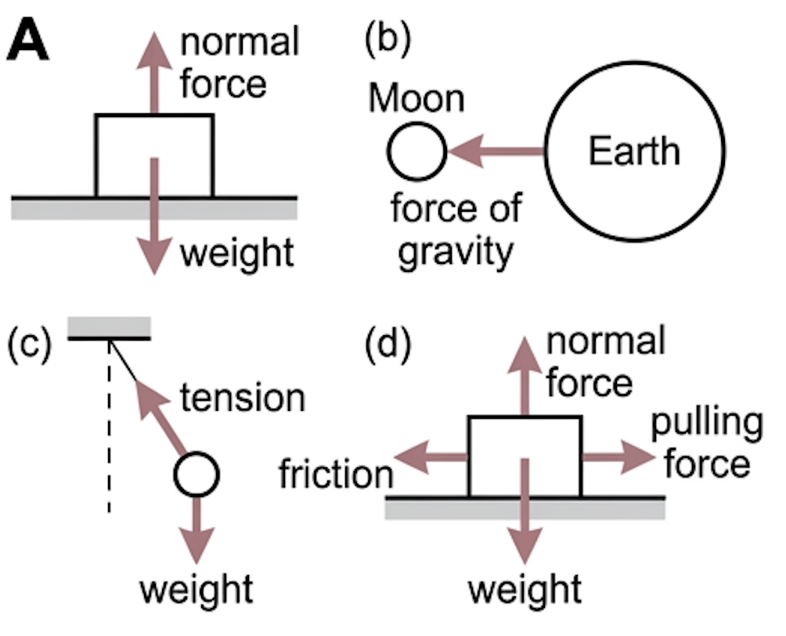
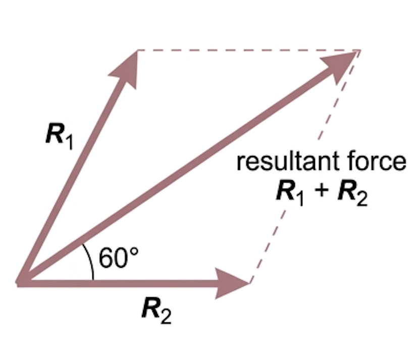
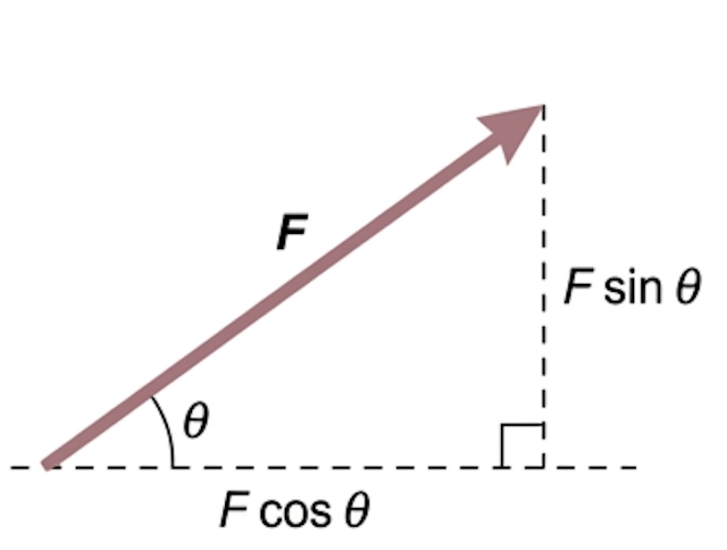
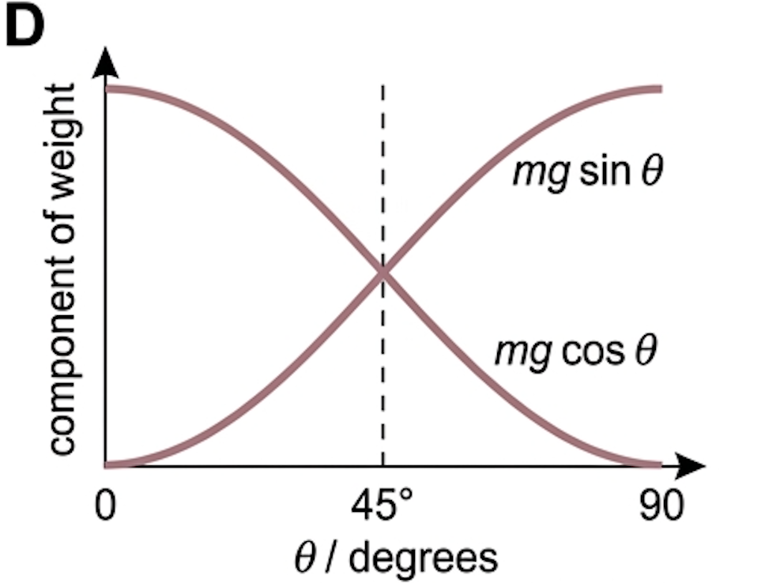
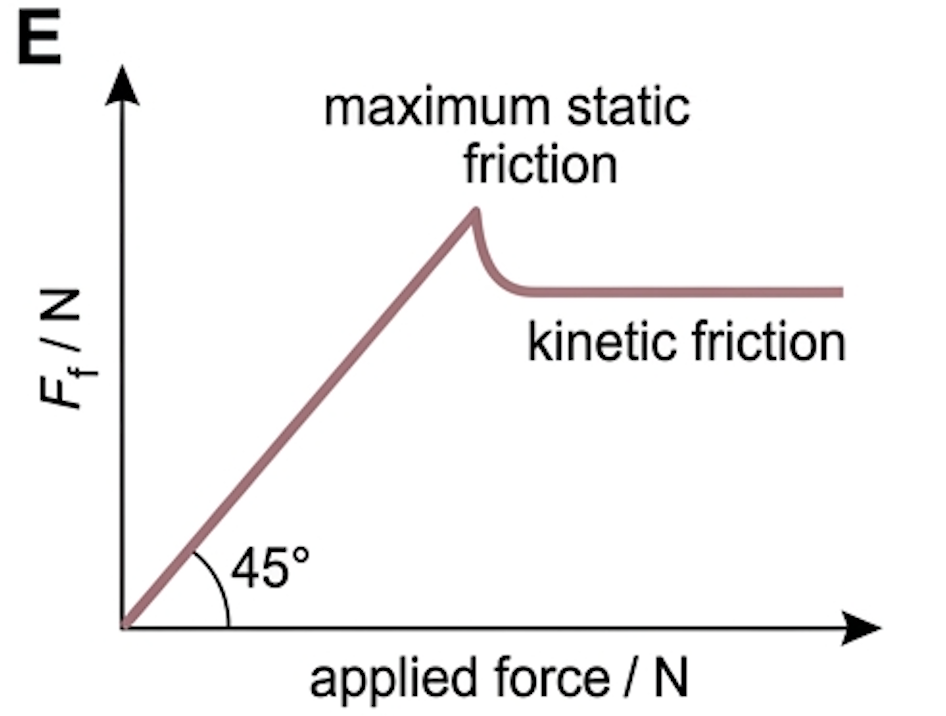
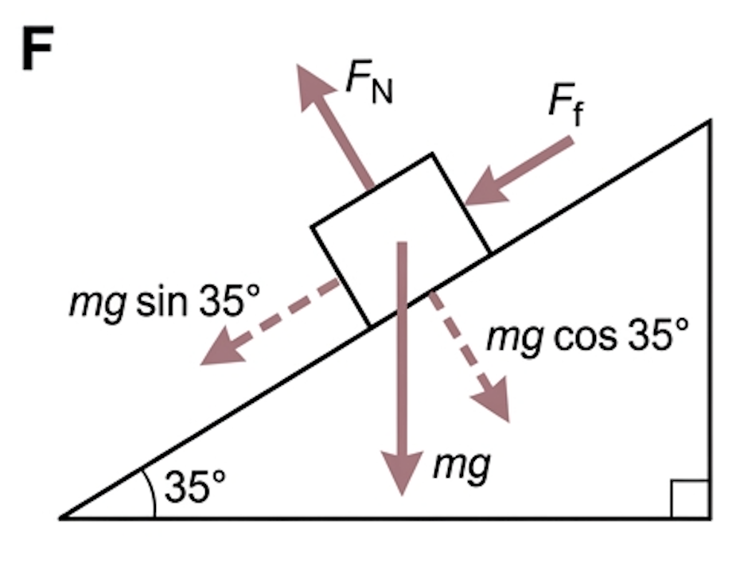

🎯 Hook – Draw less, understand more
Even the simplest of force diagrams can get confusing if all the forces are shown. So we do something that looks like cheating: draw only one object, and show only the forces acting on that one object. Everything else — the table, the string, the Earth — disappears. What is left is a free-body diagram, and it contains everything you need.

📐 Point particles and the rules of the diagram
Diagrams are often simplified further by representing the object as a small square or circle and treating it as a point particle. A point particle is an idealised representation of an object whatever its actual size and shape: it has no dimensions and occupies no space. Typically the point is located at the centre of mass.
The payoff is that all forces then act through the same point, so the analysis can ignore any rotational effects the forces might cause. Sometimes it is preferred to draw the object with its real shape — but that can cause confusion about exactly where each force acts.
| Rule | Why it matters |
|---|---|
| One object only | Forces on the table, the string or the Earth belong on their diagrams, not this one |
| Only forces acting on the object | The force the box exerts on the ground never appears on the box's diagram |
| Arrow length shows magnitude | Equal forces must be drawn equal; a zero resultant should look like a zero resultant |
| Label every arrow with the force's name | "Force" earns no marks — weight, tension, normal contact force, friction, drag do |
| No velocity or acceleration arrows | A free-body diagram shows forces only; adding \(v\) or \(a\) arrows loses marks |
➕ Resultants and components
A free-body diagram can be analysed to find the resultant force on a system — the vector sum of the forces acting, sometimes called the unbalanced or net force. For two forces, the resultant is represented in size and direction by the diagonal of the parallelogram (or rectangle) which has the two original force vectors as adjacent sides.

The opposite process is just as useful. A single force \(F\) can be considered equivalent to two smaller forces at right angles to each other, called its components. This is resolving a force, and it is used whenever the original force does not act in a direction convenient for analysis. Because the two components are perpendicular, their effects can be considered separately.

📈 Graphs every examiner uses
| Graph type | Axes (X, Y) | Shape | What to read |
|---|---|---|---|
| Component of weight against slope angle | \(\theta\), \(mg\sin\theta\) | Rising curve, zero at 0°, maximum at 90° | Where the down-slope component exceeds maximum friction, the object slips |
| Normal force against slope angle | \(\theta\), \(mg\cos\theta\) | Falling curve, \(mg\) at 0°, zero at 90° | Why friction weakens as a slope steepens — \(F_{\text{f}}\) depends on \(F_{\text{N}}\) |
| Friction against applied force | applied \(F\), \(F_{\text{f}}\) | Straight line \(y = x\), then a horizontal plateau after slipping | The peak is the maximum static friction; the plateau is kinetic friction |
| Tension against angle (pendulum) | \(\theta\), \(T\) | Falls as \(\theta\) grows | \(T = mg\cos\theta\) at the extremes of the swing — greatest at the lowest point |


✍️ Worked example – an object on the point of slipping
An object of mass 12.7 kg is stationary on a slope inclined at 35° to the horizontal, and just begins to slide at that angle. Taking \(g = 9.81\ \text{N kg}^{-1}\), find the components of the weight down and into the slope, the frictional and normal forces, and the coefficient of static friction.

🔧 Real-world: ramps and wheelchair gradients
An inclined plane is a simple device that reduces the force needed to raise a load: pushing a load up a ramp needs only \(mg\sin\theta\) rather than \(mg\). Accessibility standards cap ramp gradients near 1 in 12 — about 4.8° — which keeps that component below a tenth of the weight.
🚀 HL Extension – the swinging pendulum
For a pendulum of mass 158 g at 20° to the vertical, resolving along the string gives \(T = mg\cos 20^\circ = 0.158 \times 9.81 \times 0.940 = 1.5\ \text{N}\). The other component, \(mg\sin\theta\), is unbalanced and acts as the restoring force along the arc.
Challenge: where in the swing is the tension greatest? (Answer: at the lowest point — \(\cos\theta\) is largest there, and the string must also supply the centripetal force)
⚠️ Trap corner – common mistakes
| Misconception | Correct view |
|---|---|
| Both members of a Newton's third law pair go on the diagram | Only forces acting on the chosen object. Its reaction on the ground belongs on the ground's diagram. |
| The normal force always equals the weight | Only on a horizontal surface with no vertical acceleration. On a slope \(F_{\text{N}} = mg\cos\theta\), which is smaller. |
| A moving object needs a forward force on its diagram | Constant velocity means zero resultant. A coasting object has only resistive horizontal forces. |
| Weight and its components both belong on the diagram | Draw one or the other. Showing all three double-counts the weight. |
| Resolve horizontally and vertically on a slope | Resolve along and perpendicular to the slope — that is the direction the motion can happen in. |
Complete the statements:
✓ (b) Weight down balanced by upthrust; a single horizontal arrow — water resistance — pointing backwards, against the motion ✓ no forward force at all.
✓ (c) Weight vertically down; normal contact force perpendicular to the hill surface ✓ driving force up the slope, longer than the sum of the resistive force and the down-slope component of weight ✓ so there is a net force up the slope.
✓ (b) Friction \(= 9.9\ \text{N}\) up the slope ✓ normal force \(= 24.6\ \text{N}\) perpendicular to and away from the surface — each equal and opposite to the corresponding component.
✓ (c) \(\mu = \tan 26^\circ\) ✓ \(= 0.49\) ✓ this is the static coefficient, because it is measured at the instant sliding is about to begin.
✓ (b) Resolve the weight along the string: component \(= mg\cos 20^\circ\) ✓ \(= 0.158 \times 9.81 \times 0.940\) ✓ \(= 1.46 \approx 1.5\ \text{N}\), and the tension balances it at the extreme of the swing.
✓ (c) The perpendicular component \(mg\sin\theta\) is unbalanced and accelerates the bob along the arc back towards the centre — it is the restoring force.
✓ (d) At the point of slipping, friction is at its maximum: \(F_{\text{f}} = \mu_{\text{s}}F_{\text{N}}\) ✓ and in equilibrium \(F_{\text{f}} = mg\sin\theta\), \(F_{\text{N}} = mg\cos\theta\) ✓ so \(\mu_{\text{s}} = \dfrac{mg\sin\theta}{mg\cos\theta} = \tan\theta\) — the mass and \(g\) cancel.